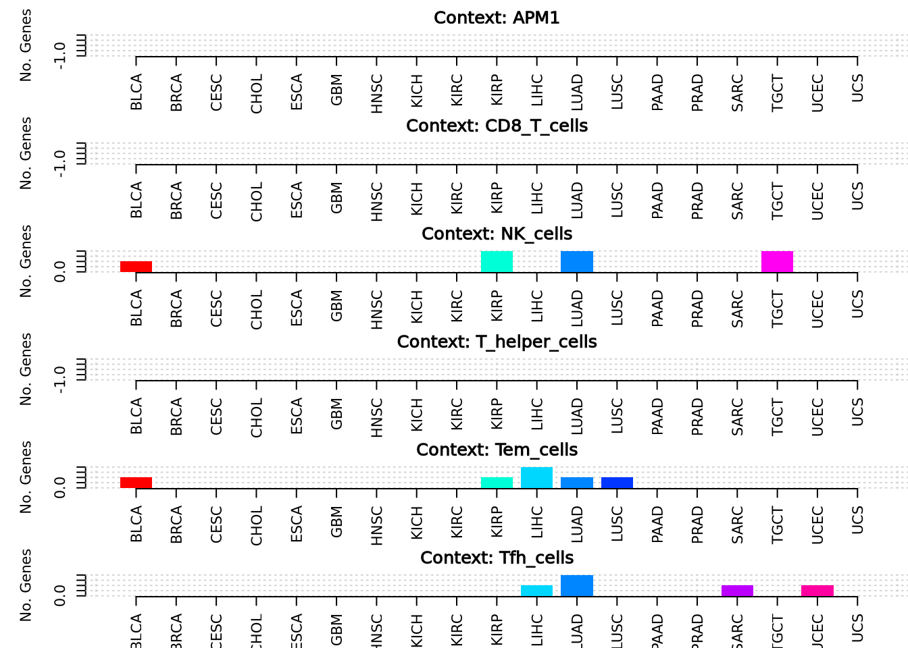

example
Qirui Zhang
2025-03-23
Last updated: 2025-04-03
Checks: 6 1
Knit directory: diffdriver/
This reproducible R Markdown analysis was created with workflowr (version 1.7.1). The Checks tab describes the reproducibility checks that were applied when the results were created. The Past versions tab lists the development history.
Great! Since the R Markdown file has been committed to the Git repository, you know the exact version of the code that produced these results.
Great job! The global environment was empty. Objects defined in the global environment can affect the analysis in your R Markdown file in unknown ways. For reproduciblity it’s best to always run the code in an empty environment.
The command set.seed(20250319) was run prior to running
the code in the R Markdown file. Setting a seed ensures that any results
that rely on randomness, e.g. subsampling or permutations, are
reproducible.
Great job! Recording the operating system, R version, and package versions is critical for reproducibility.
Nice! There were no cached chunks for this analysis, so you can be confident that you successfully produced the results during this run.
Using absolute paths to the files within your workflowr project makes it difficult for you and others to run your code on a different machine. Change the absolute path(s) below to the suggested relative path(s) to make your code more reproducible.
| absolute | relative |
|---|---|
| /dartfs/rc/lab/S/Szhao/qiruiz/diffdriver/workflowr/diffdriver/output/ | output |
Great! You are using Git for version control. Tracking code development and connecting the code version to the results is critical for reproducibility.
The results in this page were generated with repository version 442ada3. See the Past versions tab to see a history of the changes made to the R Markdown and HTML files.
Note that you need to be careful to ensure that all relevant files for
the analysis have been committed to Git prior to generating the results
(you can use wflow_publish or
wflow_git_commit). workflowr only checks the R Markdown
file, but you know if there are other scripts or data files that it
depends on. Below is the status of the Git repository when the results
were generated:
Ignored files:
Ignored: .Rproj.user/
Untracked files:
Untracked: code/run_workflowr.R
Untracked: output/BLCA_FGFR3_Aneuploidy.Score_reg59e6f336fd3d8
Unstaged changes:
Deleted: analysis/example.Rmd
Modified: diffdriver.Rproj
Note that any generated files, e.g. HTML, png, CSS, etc., are not included in this status report because it is ok for generated content to have uncommitted changes.
These are the previous versions of the repository in which changes were
made to the R Markdown (analysis/immunetraits.Rmd) and HTML
(docs/immunetraits.html) files. If you’ve configured a
remote Git repository (see ?wflow_git_remote), click on the
hyperlinks in the table below to view the files as they were in that
past version.
| File | Version | Author | Date | Message |
|---|---|---|---|---|
| Rmd | 442ada3 | Qirui Zhang | 2025-04-03 | Update all analysis |
knitr::opts_chunk$set(echo = TRUE)get_files <- function(outputdir, tumors = NULL, phenotypes = NULL) {
files <- list.files(
path = outputdir,
pattern = "_resdd\\.Rd$",
recursive = TRUE,
full.names = TRUE
)
matching_files_txt <- sub("\\.Rd$", ".txt", files)
analysis_mode <- ifelse(grepl("_sig_", basename(files)), "sig", "reg")
inner_folder_names <- basename(dirname(files)) # e.g. "Aneuploidy.Score_BLCA_mutations"
phenotype_folder_names <- basename(dirname(dirname(files))) # e.g. "Aneuploidy.Score"
tumor_names <- mapply(function(inner_name, phen) {
pattern_front <- paste0("^", phen, "_")
tmp <- sub(pattern_front, "", inner_name)
tmp <- sub("_mutations$", "", tmp)
return(tmp)
}, inner_folder_names, phenotype_folder_names)
phenos_all <- phenotype_folder_names
filedf <- data.frame(
tumor = tumor_names,
phenotype = phenos_all,
mode = analysis_mode,
file = files,
filetxt = matching_files_txt,
stringsAsFactors = FALSE
)
if (!is.null(tumors)) {
filedf <- filedf[filedf$tumor %in% tumors, ]
}
if (!is.null(phenotypes)) {
filedf <- filedf[filedf$phenotype %in% phenotypes, ]
}
rownames(filedf) <- NULL
return(filedf)
}
filedf <- get_files(
outputdir = "/dartfs/rc/lab/S/Szhao/qiruiz/diffdriver/temp/output/immunetraits"
)
head(filedf) tumor phenotype mode
1 BLCA APM1 reg
2 BLCA APM1 sig
3 BRCA APM1 reg
4 BRCA APM1 sig
5 CESC APM1 reg
6 CESC APM1 sig
file
1 /dartfs/rc/lab/S/Szhao/qiruiz/diffdriver/temp/output/immunetraits/APM1/APM1_BLCA_mutations/testdiffdriver_reg_APM1_resdd.Rd
2 /dartfs/rc/lab/S/Szhao/qiruiz/diffdriver/temp/output/immunetraits/APM1/APM1_BLCA_mutations/testdiffdriver_sig_APM1_resdd.Rd
3 /dartfs/rc/lab/S/Szhao/qiruiz/diffdriver/temp/output/immunetraits/APM1/APM1_BRCA_mutations/testdiffdriver_reg_APM1_resdd.Rd
4 /dartfs/rc/lab/S/Szhao/qiruiz/diffdriver/temp/output/immunetraits/APM1/APM1_BRCA_mutations/testdiffdriver_sig_APM1_resdd.Rd
5 /dartfs/rc/lab/S/Szhao/qiruiz/diffdriver/temp/output/immunetraits/APM1/APM1_CESC_mutations/testdiffdriver_reg_APM1_resdd.Rd
6 /dartfs/rc/lab/S/Szhao/qiruiz/diffdriver/temp/output/immunetraits/APM1/APM1_CESC_mutations/testdiffdriver_sig_APM1_resdd.Rd
filetxt
1 /dartfs/rc/lab/S/Szhao/qiruiz/diffdriver/temp/output/immunetraits/APM1/APM1_BLCA_mutations/testdiffdriver_reg_APM1_resdd.txt
2 /dartfs/rc/lab/S/Szhao/qiruiz/diffdriver/temp/output/immunetraits/APM1/APM1_BLCA_mutations/testdiffdriver_sig_APM1_resdd.txt
3 /dartfs/rc/lab/S/Szhao/qiruiz/diffdriver/temp/output/immunetraits/APM1/APM1_BRCA_mutations/testdiffdriver_reg_APM1_resdd.txt
4 /dartfs/rc/lab/S/Szhao/qiruiz/diffdriver/temp/output/immunetraits/APM1/APM1_BRCA_mutations/testdiffdriver_sig_APM1_resdd.txt
5 /dartfs/rc/lab/S/Szhao/qiruiz/diffdriver/temp/output/immunetraits/APM1/APM1_CESC_mutations/testdiffdriver_reg_APM1_resdd.txt
6 /dartfs/rc/lab/S/Szhao/qiruiz/diffdriver/temp/output/immunetraits/APM1/APM1_CESC_mutations/testdiffdriver_sig_APM1_resdd.txtget_diff_table <- function(filedf){
pheno_all <- unique(filedf$phenotype)
numlist <- list()
for (p in pheno_all){
p_txtfiles <- filedf[filedf$phenotype == p, ]
numlist[[p]] <- list()
for (t in seq_len(nrow(p_txtfiles))){
txtf <- p_txtfiles[t, "filetxt"]
rdf <- p_txtfiles[t, "file"]
tumor <- p_txtfiles[t, "tumor"]
mode <- p_txtfiles[t, "mode"] # reg / sig
env <- new.env()
load(rdf, envir = env)
res_rdata <- env$res
res <- read.table(txtf, header = TRUE)
res$gene <- row.names(res)
res$mode <- mode
res$alpha <- sapply(res$gene, function(gene){
res_rdata[[gene]][["dd"]][["res.alt"]]$alpha[2]
})
sig_res <- res[res$dd.fdr < 0.1, ]
if (nrow(sig_res) > 0){
numlist[[p]][[ paste0(tumor, "_", mode) ]] <- sig_res
}
}
if (length(numlist[[p]]) == 0){
numlist[[p]] <- NULL
}
}
combined_df <- do.call(
rbind,
lapply(names(numlist), function(pheno) {
numlist.pheno <- numlist[[pheno]]
df.pheno <- do.call(rbind, lapply(names(numlist.pheno), function(tname) {
df <- numlist.pheno[[tname]]
df$tumor <- sub("_.*", "", tname)
df$mode <- sub(".*_", "", tname)
return(df)
}))
df.pheno$pheno <- pheno
return(df.pheno)
})
)
return(combined_df)
}
diff_table <- get_diff_table(filedf)library(DT)
diff_table_sig <- subset(diff_table, mode == "sig")
datatable(diff_table_sig, options = list(pageLength = 10))diff_table_reg <- subset(diff_table, mode == "reg")
datatable(diff_table_reg, options = list(pageLength = 10))plot_diff_number <- function(filedf, mode = c("all", "reg", "sig")){
mode <- match.arg(mode)
if (mode != "all"){
filedf <- filedf[filedf$mode == mode, ]
}
pheno_all <- unique(filedf$phenotype)
numlist <- list()
for (p in pheno_all){
p_txtfiles <- filedf[filedf$phenotype == p, ]
numlist[[p]] <- list()
for (t in 1:nrow(p_txtfiles)){
txtf <- p_txtfiles[t, "filetxt"]
tumor <- p_txtfiles[t, "tumor"]
res <- read.table(txtf, header = TRUE)
numlist[[p]][[tumor]] <- c(
nrow(res[res$dd.fdr < 0.1,]),
nrow(res) - nrow(res[res$dd.fdr < 0.1,])
)
}
}
par(mfrow = c(length(numlist),1), mar = c(3,5,2,0))
for (phenotype in names(numlist)) {
colors <- rainbow(length(numlist[[phenotype]]))
plot(
NULL,
xlim = c(0.5, length(numlist[[phenotype]]) + 0.5),
ylim = c(0, max(unlist(sapply(numlist[[phenotype]], `[`, 1)))),
xlab = "Tumor Type",
ylab = "No. Genes",
main = paste("Context:", phenotype),
xaxt = "n", bty = 'n'
)
grid()
axis(
1,
at = 1:length(numlist[[phenotype]]),
labels = names(numlist[[phenotype]]),
las = 2
)
for (i in seq_along(numlist[[phenotype]])) {
bar_height <- numlist[[phenotype]][[i]][1]
rect(i - 0.4, 0, i + 0.4, bar_height, col = colors[i], border = NA)
}
}
}plot_diff_number(filedf, mode = "reg")
plot_diff_number(filedf, mode = "sig")
plot_each <- function(outdt, path.base){
options(repr.plot.width = 7, repr.plot.height = 3)
for (i in seq_len(nrow(outdt))) {
hits_i <- paste0(
"testdiffdriver_",
outdt$mode[i], "_",
outdt$pheno[i],
"_resdd.Rd"
)
subfolder <- paste0(outdt$pheno[i], "_", outdt$tumor[i], "_mutations")
path <- file.path(path.base, outdt$pheno[i], subfolder, hits_i)
load(path)
ganno <- fannoallg[[ outdt$gene[i] ]]
cannoj <- e
names(cannoj) <- "Phenotype"
mutmtx <- riallg[[ outdt$gene[i] ]]
bmrmtx <- bmrallg[[ outdt$gene[i] ]]
message("Plotting: ", outdt$tumor[i], "_", outdt$gene[i], "_", outdt$pheno[i], "_", outdt$mode[i])
colnames(mutmtx)[colnames(mutmtx) == "chrom"] <- "Chromosome"
colnames(mutmtx)[colnames(mutmtx) == "start"] <- "Start"
colnames(mutmtx)[colnames(mutmtx) == "ref"] <- "Ref"
colnames(mutmtx)[colnames(mutmtx) == "alt"] <- "Alt"
diffdriver::plot_mut(
gene_name = outdt$gene[i],
mut = mutmtx,
pheno = cannoj,
totalnttype = 96,
anno_dir = "/dartfs/rc/lab/S/Szhao/qiruiz/diffdriver/temp/annodir96",
output_prefix = paste(
outdt$tumor[i], outdt$gene[i], outdt$pheno[i], outdt$mode[i],
sep = "_"
),
output_dir = "/dartfs/rc/lab/S/Szhao/qiruiz/diffdriver/workflowr/diffdriver/output/"
)
diffdriver::plot_mut(gene_name = "PIK3CA", mut= mut, pheno = pheno, totalnttype = 9, anno_dir = "~/temp/annodir9")
}
}outdt <- data.frame(
tumor = c("BLCA", "BLCA"),
pheno = c("Aneuploidy.Score", "Aneuploidy.Score"),
gene = c("FGFR3", "NFE2L2"),
mode = c("reg", "reg")
)
##plot_each(
## outdt = outdt,
## path.base = "/dartfs/rc/lab/S/Szhao/qiruiz/diffdriver/temp/output"
##)mut_path <- "/dartfs/rc/lab/S/Szhao/qiruiz/diffdriver/tumor_specific_input/KICH/KICH_mutations.txt"
mut <- read.table(mut_path, header = TRUE, sep = "\t")
head(mut) Chromosome Position Ref Alt SampleID
1 11 55587779 C T TCGA-KN-8429
2 10 71877654 A C TCGA-KL-8326
3 2 132021781 A T TCGA-KL-8346
4 8 2836315 G T TCGA-KO-8404
5 4 5564754 C T TCGA-KO-8414
6 20 57767954 C T TCGA-KL-8335pheno_path <- "/dartfs/rc/lab/S/Szhao/qiruiz/diffdriver/batch3/tumor_specific_input/KICH/KICH_Tem_cells.txt"
pheno <- read.table(pheno_path, header = TRUE, sep = "\t")
head(pheno) SampleID Tem.cells
1 TCGA-KM-8639 0.06995217
2 TCGA-KN-8424 0.13275387
3 TCGA-KN-8426 0.08187756
4 TCGA-KO-8414 0.09180545
5 TCGA-KN-8423 0.10712793
6 TCGA-KN-8419 0.12391147diffdriver::plot_mut(gene_name = "TP53", mut= mut, pheno = pheno, totalnttype = 96,
anno_dir = "/dartfs/rc/lab/S/Szhao/qiruiz/diffdriver/temp/annodir96")[1] "coding..."
[1] "processing ..."
[1] "for qnvars, filling in missing values ..."
[1] "for cvars (0/1 categories), filling in missing values ..."
[1] "normalizing categorical variables in annotation matrix ..."
library(dplyr)
Attaching package: 'dplyr'The following objects are masked from 'package:stats':
filter, lagThe following objects are masked from 'package:base':
intersect, setdiff, setequal, uniondf_summary <- diff_table %>%
filter(mode == "sig") %>%
group_by(tumor, pheno) %>%
summarise(num_genes = n_distinct(gene)) %>%
ungroup()`summarise()` has grouped output by 'tumor'. You can override using the
`.groups` argument.head(df_summary)# A tibble: 2 × 3
tumor pheno num_genes
<chr> <chr> <int>
1 TGCT NK_cells 1
2 UCEC T_helper_cells 1plot_one_pheno <- function(df_single, pheno_name) {
par(mfrow=c(1,1), mar = c(3,5,2,0))
colors <- rainbow(nrow(df_single))
ymax <- max(df_single$num_genes)
plot(
NULL,
xlim = c(0.5, nrow(df_single) + 0.5),
ylim = c(0, ymax),
xlab = "Tumor Type",
ylab = "No. Genes",
main = paste("Context:", pheno_name),
xaxt = "n", bty = 'n'
)
grid()
axis(
1,
at = 1:nrow(df_single),
labels = df_single$tumor,
las=2
)
for(i in seq_len(nrow(df_single))) {
rect(i-0.4, 0, i+0.4, df_single$num_genes[i],
col=colors[i], border=NA)
}
}
df_single <- subset(df_summary, pheno == "NK_cells")
plot_one_pheno(
df_single = df_single,
pheno_name = "NK_cells"
)
df_table <- diff_table %>%
filter(mode == "sig") %>%
transmute(
Tumor = tumor,
Context = pheno,
Gene = gene,
p = dd.p,
FDR = dd.fdr
) %>%
filter(FDR < 0.1) %>%
arrange(FDR)
head(df_table) Tumor Context Gene p FDR
MME1 UCEC T_helper_cells MME 0.0006736263 0.02694505
KRAS TGCT NK_cells KRAS 0.0321690007 0.09650700library(gt)
df_table %>%
head(8) %>%
gt() %>%
tab_header(
title = "Significant Drivers",
subtitle = "FDR < 0.1"
) %>%
tab_style(
style = list(
cell_fill(color = "#B60059"),
cell_text(color = "white", weight = "bold")
),
locations = cells_column_labels(everything())
) %>%
fmt_scientific(
columns = c(p, FDR),
decimals = 2
) %>%
tab_options(
table.border.top.style = "none",
table.border.bottom.style = "none",
table.border.left.style = "none",
table.border.right.style = "none",
column_labels.border.bottom.style = "solid",
column_labels.border.bottom.width = px(2),
column_labels.border.bottom.color = "black",
data_row.padding = px(4),
table.width = pct(50)
)| Significant Drivers | ||||
| FDR < 0.1 | ||||
| Tumor | Context | Gene | p | FDR |
|---|---|---|---|---|
| UCEC | T_helper_cells | MME | 6.74 × 10−4 | 2.69 × 10−2 |
| TGCT | NK_cells | KRAS | 3.22 × 10−2 | 9.65 × 10−2 |
sessionInfo()R version 4.4.2 (2024-10-31)
Platform: x86_64-conda-linux-gnu
Running under: Ubuntu 24.04.1 LTS
Matrix products: default
BLAS/LAPACK: /dartfs-hpc/rc/home/p/f0070pp/.conda/envs/diffdriver/lib/libopenblasp-r0.3.29.so; LAPACK version 3.12.0
locale:
[1] LC_CTYPE=en_US.UTF-8 LC_NUMERIC=C
[3] LC_TIME=en_US.UTF-8 LC_COLLATE=en_US.UTF-8
[5] LC_MONETARY=en_US.UTF-8 LC_MESSAGES=en_US.UTF-8
[7] LC_PAPER=en_US.UTF-8 LC_NAME=C
[9] LC_ADDRESS=C LC_TELEPHONE=C
[11] LC_MEASUREMENT=en_US.UTF-8 LC_IDENTIFICATION=C
time zone: Etc/UTC
tzcode source: system (glibc)
attached base packages:
[1] stats graphics grDevices utils datasets methods base
other attached packages:
[1] gt_0.11.1 dplyr_1.1.4 DT_0.33 workflowr_1.7.1
loaded via a namespace (and not attached):
[1] Matrix_1.7-3 jsonlite_1.9.1 compiler_4.4.2 promises_1.3.2
[5] tidyselect_1.2.1 Rcpp_1.0.14 xml2_1.3.8 stringr_1.5.1
[9] git2r_0.35.0 callr_3.7.6 later_1.4.1 jquerylib_0.1.4
[13] yaml_2.3.10 fastmap_1.2.0 lattice_0.22-6 R6_2.6.1
[17] generics_0.1.3 knitr_1.50 htmlwidgets_1.6.4 tibble_3.2.1
[21] rprojroot_2.0.4 bslib_0.9.0 pillar_1.10.1 diffdriver_0.1.6
[25] rlang_1.1.5 utf8_1.2.4 cachem_1.1.0 stringi_1.8.4
[29] httpuv_1.6.15 xfun_0.51 getPass_0.2-4 fs_1.6.5
[33] sass_0.4.9 cli_3.6.4 withr_3.0.2 magrittr_2.0.3
[37] crosstalk_1.2.1 ps_1.8.1 digest_0.6.37 grid_4.4.2
[41] processx_3.8.6 rstudioapi_0.17.1 lifecycle_1.0.4 vctrs_0.6.5
[45] data.table_1.17.0 evaluate_1.0.3 glue_1.8.0 whisker_0.4.1
[49] rmarkdown_2.29 httr_1.4.7 tools_4.4.2 pkgconfig_2.0.3
[53] htmltools_0.5.8.1